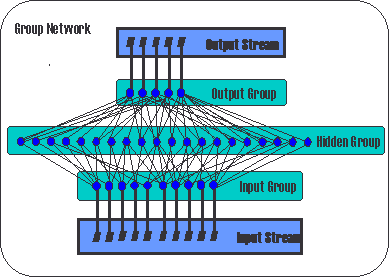

There is also an excellent on-line paper by Tony Robinson, Mike Hochberg and Steve Renals, about the ABBOT, hybrid HMM/ANN system.
And this page in the newsgroup FAQ has references to some books.
All tools in the NICO toolkit are commands that can by entered at the shell prompt or run from a shell script. If a command is run without any arguments, the syntax of that command is printed together with a brief description of the command's options and their default values.
The tools of the NICO toolbox can be divided into the following broad classes:
 |
#!/bin/sh NET=my_net.rtdnn INPDIM=10 HIDDENSIZE=20 OUTDIM=5 CreateNet $NET $NET AddGroup input $NET AddUnit -i -u $INPDIM input $NET AddGroup hidden $NET AddUnit -u $HIDDENSIZE hidden $NET AddGroup output $NET AddUnit -o -u $OUTDIM output $NET Connect input hidden $NET Connect hidden output $NET AddStream $INPDIM r INPUT $NET LinkGroup INPUT input $NET AddStream $OUTDIM t OUTPUT $NET LinkGroup OUTPUT output $NET |
Let's look at the commands in the shell script from the top to the bottom. The first NICO command is CreateNet. It simply creates a network definition file for a new network. The second argument is the file name.
The second NICO command is AddGroup. It adds a new group to the created network. A group is an object that can have units or other groups as members. The next command is AddUnit. It creates unit(s) and puts them in a specified group. After this first AddUnit command, the network consists of a group named "input" containing 10 units (the -i option to AddUnit specified that it is input units and the -u option specified that 10 units should be created).
The next two commands, AddGroup and AddUnit, creates another group holding 20 hidden units and then the last group, the output group is created with 5 output units (the -o option specifies that is output units).
Now, adding connections from units in the input group to the hidden units and from the hidden units to the output units is a simple matter. The two Connect commands does just that.
Finally we need to connect our network to the outside world. In the NICO toolkit this is taken care of by stream objects. Here we add one input stream and one output stream with the two AddStream commands. The LinkGroup commands tells the network which units should be associated with which stream.
For the network to be useful, some more information must be specified. The data format, directory and file extension for each stream should be specified (see AddStream and EditStream).
The command Display is useful for examining a network definition file. If no options are given (Display my_net.rtdnn), a brief description is printed. But Display has many options to explore all properties the networks.
Here is a list of some useful building tools:
Here is a list of training tools in the NICO toolkit:
CResult is a tool for evaluating classification performance. It has many analysis options such as confusion matrix and "within top-N".
These are the evaluation tools: